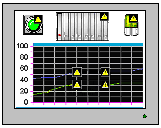
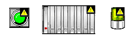
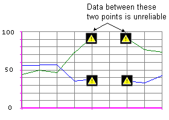

|
|
|
|
|
|
|
|
When there is a communication error and values are displayed on the panel, any variables related to the communication error display the data quality icon  , which indicates the value is not reliable.
, which indicates the value is not reliable.

There are two scenarios that can result in communication errors and unreliable data.
Target machine displays data from equipment
Target machine uses data-sharing to display data from a different target machine
The communication error could be a result of loose cables, mismatched communication settings, the equipment is turned off, or an address is referenced that does not exist in the PLC.
For most objects, when data quality is no good the data quality icon  displays in the top-right corner of the object.
displays in the top-right corner of the object.

Just one icon displays on each object, even if there are multiple external variables set up in the object. For example, to a single drawing you can add multiple animations associated with multiple external variables. Even if the data integrity for all the external variables is no good, just the one icon is displayed. And although the data may be incorrect, objects display the last known good value.
Once the icon disappears, communication has resumed and the data is once again reliable.
During target startup, variable data quality is unknown. The Selector, Bar Graph, and Meter parts indicate that data quality is unknown in the following ways:
Selector: The Selector's indicator does not display.
Bar Graph: A batch pattern displays on the Bar Graph's indicator.
Meter: The Meter's indicator does not display.
Although most objects use a single icon, in the case of trend graphs (real-time and historical) multiple icons show the range of data that is unreliable for each channel.

When using external variables in scripts, you should check the data integrity before using their values. See isDataQualityGood in Section 18.9.1.6, Variable Methods.